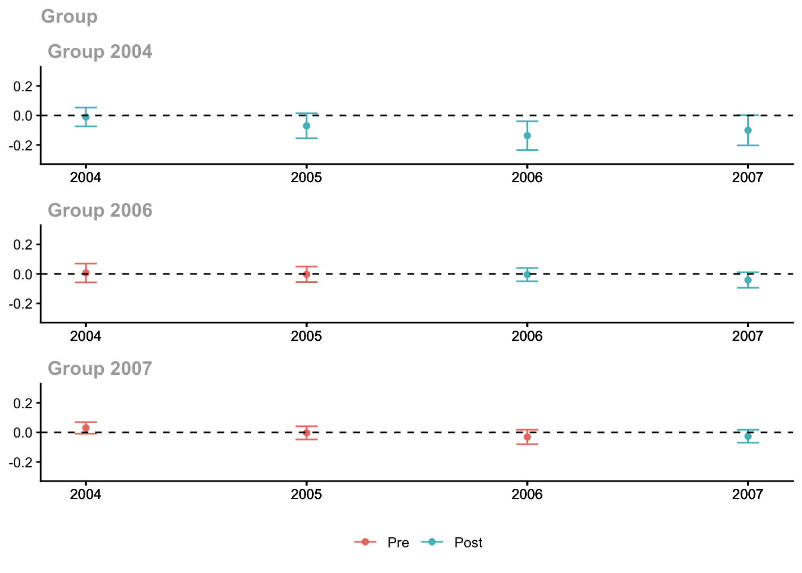
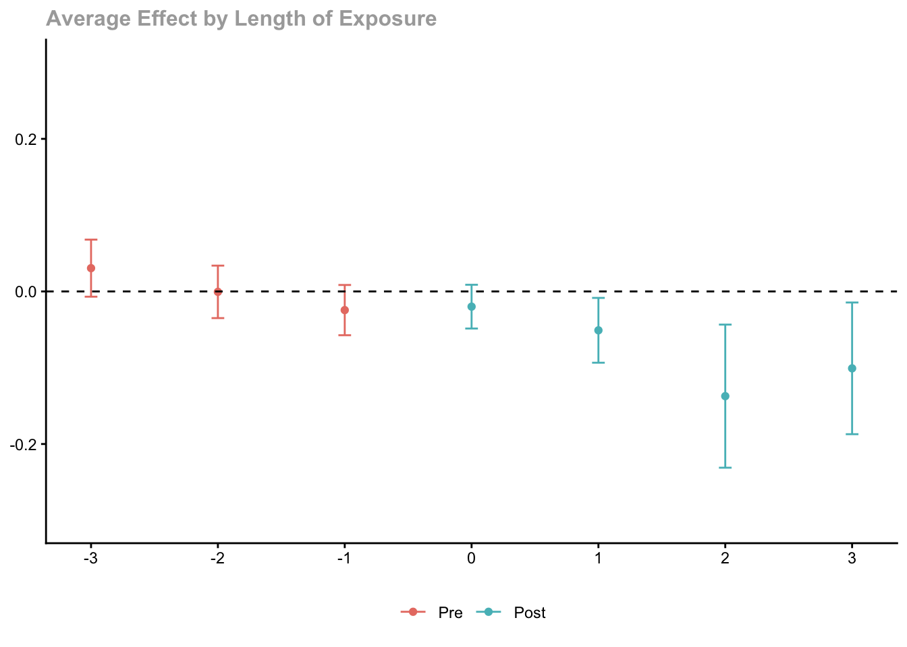
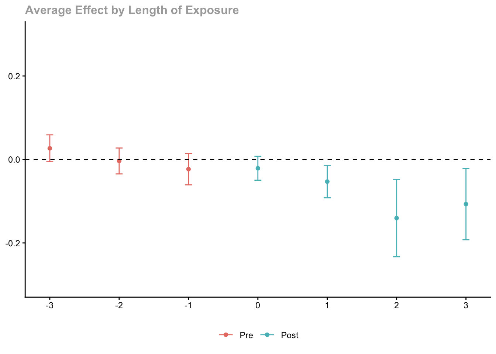
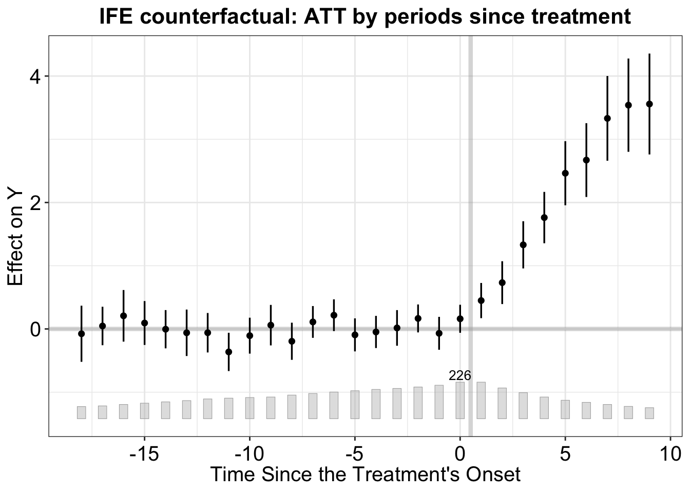

library(ggplot2)
library(plm)
library(fixest)
library(sandwich)
library(lmtest)
library(did)
library(fect)13. Fixed Effects and Modern DiD
Random effects, Hausman test, CRE, dynamic panels, and new DiD methods
This chapter covers the fixed vs. random effects choice, correlated random effects (Mundlak), dynamic panel GMM, and modern difference-in-differences methods that address the problems with two-way fixed effects under staggered treatment adoption. We use plm for panel estimation, did for Callaway–Sant’Anna group-time ATTs, and fect for counterfactual imputation estimators.
Questions this chapter answers:
- When should you use fixed effects vs. random effects, and what does the Hausman test tell you?
- How does the TWFE estimator fail under staggered treatment with heterogeneous effects?
- What modern alternatives (Callaway-Sant’Anna, fect, matrix completion) fix the negative weighting problem?
1 Random effects as GLS
In Chapter 12 we estimated fixed effects by demeaning within each unit. The random effects (RE) estimator instead treats \(\alpha_i\) as part of a composite error \(\nu_{it} = \alpha_i + \varepsilon_{it}\) and applies GLS to exploit the known correlation structure:
\[\text{Var}(\nu_i) = \sigma_\varepsilon^2 I_T + \sigma_\alpha^2 \iota\iota' = \Omega \tag{1}\]
data("Produc", package = "plm")
pdata <- pdata.frame(Produc, index = c("state", "year"))# Fixed effects
fe_fit <- plm(log(gsp) ~ log(pcap) + log(pc) + log(emp) + unemp,
data = pdata, model = "within")
# Random effects (GLS with error components)
re_fit <- plm(log(gsp) ~ log(pcap) + log(pc) + log(emp) + unemp,
data = pdata, model = "random")
# Compare slope coefficients
coef_comp <- data.frame(
Variable = names(coef(fe_fit)),
FE = round(coef(fe_fit), 4),
RE = round(coef(re_fit)[-1], 4)
)
rownames(coef_comp) <- NULL
coef_comp Variable FE RE
1 log(pcap) -0.0261 0.0044
2 log(pc) 0.2920 0.3105
3 log(emp) 0.7682 0.7297
4 unemp -0.0053 -0.0062RE is more efficient than FE when the random effects assumption (\(\alpha_i \perp X_{it}\)) holds, because it uses both within-unit and between-unit variation. But if \(\alpha_i\) is correlated with the regressors, RE is inconsistent.
1.1 Variance components
The RE estimator decomposes total variance into unit-level (\(\sigma_\alpha^2\)) and idiosyncratic (\(\sigma_\varepsilon^2\)) components:
# Extract variance components from plm
ercomp <- ercomp(re_fit)
cat("sigma_alpha (unit):", round(sqrt(ercomp$sigma2["id"]), 4), "\n")sigma_alpha (unit): 0.0827 cat("sigma_eps (idios):", round(sqrt(ercomp$sigma2["idios"]), 4), "\n")sigma_eps (idios): 0.0381 cat("theta (shrinkage):", round(ercomp$theta, 4), "\n")theta (shrinkage): 0.8888 The shrinkage parameter \(\theta\) controls how much RE pulls toward the within estimator versus the between estimator. When \(\theta\) is close to 1, RE is close to FE; when \(\theta\) is close to 0, RE is close to pooled OLS.
1.2 Partial pooling: RE as a weighted average
# Between estimator
be_fit <- plm(log(gsp) ~ log(pcap) + log(pc) + log(emp) + unemp,
data = pdata, model = "between")
cat("Between: ", round(coef(be_fit)["log(pcap)"], 4), "\n")Between: 0.1794 cat("Within: ", round(coef(fe_fit)["log(pcap)"], 4), "\n")Within: -0.0261 cat("RE: ", round(coef(re_fit)["log(pcap)"], 4), "\n")RE: 0.0044 cat("(RE is between the within and between estimates)\n")(RE is between the within and between estimates)2 The Hausman test
The Hausman test compares FE (consistent under both \(H_0\) and \(H_1\)) with RE (efficient under \(H_0\) but inconsistent under \(H_1\)):
\[H = (\hat\beta_{FE} - \hat\beta_{RE})' [\text{Var}(\hat\beta_{FE}) - \text{Var}(\hat\beta_{RE})]^{-1} (\hat\beta_{FE} - \hat\beta_{RE}) \xrightarrow{d} \chi^2_K \tag{2}\]
Theorem 1 (Hausman Test) The Hausman statistic \(H = (\hat\beta_{FE} - \hat\beta_{RE})'[\text{Var}(\hat\beta_{FE}) - \text{Var}(\hat\beta_{RE})]^{-1}(\hat\beta_{FE} - \hat\beta_{RE}) \xrightarrow{d} \chi^2_K\) tests whether FE and RE estimates differ systematically. Rejection means \(\alpha_i\) is correlated with \(X_{it}\), favoring FE.
phtest(fe_fit, re_fit)
Hausman Test
data: log(gsp) ~ log(pcap) + log(pc) + log(emp) + unemp
chisq = 9.5254, df = 4, p-value = 0.04923
alternative hypothesis: one model is inconsistentA small p-value rejects the RE assumption—state fixed effects are correlated with the regressors, so FE is preferred.
Caveat: Using the Hausman test to choose between FE and RE creates a pretest estimator with distorted coverage. The research design should determine the estimator; report the Hausman test as a diagnostic. The Hausman test can also be viewed as a GMM overidentification test.
3 Correlated random effects (Mundlak)
Mundlak (1978) proposed a middle ground: include the group means \(\bar{x}_i\) as additional regressors in the RE model. This “soaks up” the correlation between \(\alpha_i\) and \(x_{it}\):
\[\alpha_i = \delta_0 + \bar{x}_i' \delta + \zeta_i, \quad \mathbb{E}[\zeta_i \mid x_{it}, z_i] = 0\]
# Add group means of time-varying regressors
pdata$lpcap_bar <- Between(log(pdata$pcap))
pdata$lpc_bar <- Between(log(pdata$pc))
pdata$lemp_bar <- Between(log(pdata$emp))
pdata$unemp_bar <- Between(pdata$unemp)
# CRE = RE + group means
cre_fit <- plm(log(gsp) ~ log(pcap) + log(pc) + log(emp) + unemp +
lpcap_bar + lpc_bar + lemp_bar + unemp_bar,
data = pdata, model = "random")
# CRE slopes = FE slopes (by FWL)
cat("CRE slopes: ", round(coef(cre_fit)[2:5], 4), "\n")CRE slopes: -0.0261 0.292 0.7682 -0.0053 cat("FE slopes: ", round(coef(fe_fit), 4), "\n")FE slopes: -0.0261 0.292 0.7682 -0.0053 The CRE slopes on time-varying regressors match FE exactly. This follows from the FWL theorem: partialing out \(\bar{x}_i\) from \(x_{it}\) gives the within-demeaned data.
Theorem 2 (Correlated Random Effects (Mundlak)) Adding group means \(\bar{x}_i\) to the RE model gives CRE: \(y_{it} = x_{it}'\beta + \bar{x}_i'\delta + \alpha_i + \varepsilon_{it}\). The slope \(\hat\beta_{CRE}\) equals \(\hat\beta_{FE}\) by FWL. Testing \(\delta = 0\) is equivalent to the Hausman test but works with robust SEs and allows estimation of time-invariant variable effects.
NoteCRE = FE + Time-Invariant Variables
The Mundlak/CRE approach gives identical slope coefficients to FE while also allowing estimation of effects of time-invariant regressors (region, sex, ethnicity). It also provides a robust version of the Hausman test through an F-test on the group means.
3.1 The Mundlak test = Hausman test
Testing \(H_0: \delta = 0\) (the group means have no additional explanatory power) is equivalent to the Hausman test:
# F-test on the group means
library(car)Loading required package: carDatalinearHypothesis(cre_fit,
c("lpcap_bar = 0", "lpc_bar = 0", "lemp_bar = 0", "unemp_bar = 0"))
Linear hypothesis test:
lpcap_bar = 0
lpc_bar = 0
lemp_bar = 0
unemp_bar = 0
Model 1: restricted model
Model 2: log(gsp) ~ log(pcap) + log(pc) + log(emp) + unemp + lpcap_bar +
lpc_bar + lemp_bar + unemp_bar
Res.Df Df Chisq Pr(>Chisq)
1 811
2 807 4 9.7181 0.04545 *
---
Signif. codes: 0 '***' 0.001 '**' 0.01 '*' 0.05 '.' 0.1 ' ' 13.2 CRE identifies effects of time-invariant variables
A key advantage of CRE over FE: it can estimate effects of time-invariant regressors. FE sweeps them out along with \(\alpha_i\).
# Add a time-invariant variable: region
pdata$region_ne <- as.numeric(pdata$region == "1")
pdata$region_s <- as.numeric(pdata$region == "3")
pdata$region_w <- as.numeric(pdata$region == "4")
cre_region <- plm(log(gsp) ~ log(pcap) + log(pc) + log(emp) + unemp +
lpcap_bar + lpc_bar + lemp_bar + unemp_bar +
region_ne + region_s + region_w,
data = pdata, model = "random")
# Region coefficients (relative to North Central)
cat("Region effects (CRE):\n")Region effects (CRE):cat(" Northeast:", round(coef(cre_region)["region_ne"], 4), "\n") Northeast: 0.1225 cat(" South: ", round(coef(cre_region)["region_s"], 4), "\n") South: -0.0089 cat(" West: ", round(coef(cre_region)["region_w"], 4), "\n") West: -0.102 4 The problem with TWFE under staggered treatment
Standard two-way fixed effects (TWFE) with staggered treatment can produce severely biased estimates when treatment effects are heterogeneous. TWFE implicitly compares newly-treated units to already-treated units, creating negative weights on some group-time ATTs.
Theorem 3 (TWFE Bias Under Staggered Treatment) With staggered adoption and heterogeneous treatment effects, TWFE assigns negative weights to some group-time ATTs — using already-treated units as controls for newly-treated units. The resulting estimate can be far from any meaningful causal parameter, including the wrong sign.
WarningTWFE Can Produce Negative Weights
Under staggered treatment with dynamic or heterogeneous effects, TWFE regression assigns negative weights to some group-time treatment effects. This means the TWFE coefficient is not a convex average of individual treatment effects — it can even have the wrong sign. Use Callaway-Sant’Anna, Sun-Abraham, or fect instead.
4.1 Simulation: TWFE bias
set.seed(42)
N <- 200; T_max <- 10
# Staggered adoption: 3 cohorts + never-treated
cohorts <- c(4, 6, 8) # treatment start times
sim_panel <- data.frame()
for (i in 1:N) {
# Assign to cohort (25% each)
g <- sample(c(cohorts, 0), 1) # 0 = never treated
alpha_i <- rnorm(1, sd = 2)
for (t in 1:T_max) {
treated <- (g > 0) & (t >= g)
# Treatment effect grows with exposure AND varies by cohort
te <- if (treated) 1.0 + 0.3 * (t - g) + 0.5 * (g == 4) else 0
y <- 2 + alpha_i + 0.2 * t + te + rnorm(1)
sim_panel <- rbind(sim_panel,
data.frame(id = i, time = t, y = y,
treat = as.integer(treated),
cohort = g,
first_treat = ifelse(g == 0, 0, g)))
}
}
# TWFE regression
twfe <- feols(y ~ treat | id + time, data = sim_panel)
cat("TWFE estimate:", round(coef(twfe)["treat"], 3), "\n")TWFE estimate: 1.417 # True average ATT among treated observations
true_att <- mean(sim_panel$y[sim_panel$treat == 1]) -
mean(2 + ave(rnorm(N), rep(1:N, each = T_max)) + 0.2 * sim_panel$time[sim_panel$treat == 1])Warning in split.default(x, g): data length is not a multiple of split variableWarning in split.default(seq_along(x), f, drop = drop, ...): data length is not
a multiple of split variableWarning in 2 + ave(rnorm(N), rep(1:N, each = T_max)) + 0.2 *
sim_panel$time[sim_panel$treat == : longer object length is not a multiple of
shorter object lengthcat("(The true ATT varies by cohort and exposure time -- TWFE averages with potentially negative weights)\n")(The true ATT varies by cohort and exposure time -- TWFE averages with potentially negative weights)5 Callaway–Sant’Anna: group-time ATTs
The did package (Callaway & Sant’Anna, 2021) avoids the TWFE problem by estimating separate ATTs for each group-time pair, then aggregating. The mpdta dataset tracks teen employment across 500 U.S. counties, with staggered minimum wage increases.
data(mpdta)
cat("Counties:", length(unique(mpdta$countyreal)),
" Years:", paste(range(mpdta$year), collapse = "-"),
" Treatment cohorts:", paste(sort(unique(mpdta$first.treat[mpdta$first.treat > 0])),
collapse = ", "), "\n")Counties: 500 Years: 2003-2007 Treatment cohorts: 2004, 2006, 2007 head(mpdta) year countyreal lpop lemp first.treat treat
866 2003 8001 5.896761 8.461469 2007 1
841 2004 8001 5.896761 8.336870 2007 1
842 2005 8001 5.896761 8.340217 2007 1
819 2006 8001 5.896761 8.378161 2007 1
827 2007 8001 5.896761 8.487352 2007 1
937 2003 8019 2.232377 4.997212 2007 15.1 Estimating group-time ATTs
# Estimate all group-time ATTs
cs_out <- att_gt(
yname = "lemp",
gname = "first.treat",
idname = "countyreal",
tname = "year",
xformla = ~1, # unconditional
data = mpdta,
control_group = "nevertreated",
est_method = "dr" # doubly robust (default)
)
summary(cs_out)
Call:
att_gt(yname = "lemp", tname = "year", idname = "countyreal",
gname = "first.treat", xformla = ~1, data = mpdta, control_group = "nevertreated",
est_method = "dr")
Reference: Callaway, Brantly and Pedro H.C. Sant'Anna. "Difference-in-Differences with Multiple Time Periods." Journal of Econometrics, Vol. 225, No. 2, pp. 200-230, 2021. <https://doi.org/10.1016/j.jeconom.2020.12.001>, <https://arxiv.org/abs/1803.09015>
Group-Time Average Treatment Effects:
Group Time ATT(g,t) Std. Error [95% Simult. Conf. Band]
2004 2004 -0.0105 0.0237 -0.0747 0.0537
2004 2005 -0.0704 0.0313 -0.1553 0.0145
2004 2006 -0.1373 0.0362 -0.2354 -0.0391 *
2004 2007 -0.1008 0.0379 -0.2036 0.0020
2006 2004 0.0065 0.0235 -0.0571 0.0702
2006 2005 -0.0028 0.0193 -0.0552 0.0497
2006 2006 -0.0046 0.0167 -0.0499 0.0407
2006 2007 -0.0412 0.0195 -0.0940 0.0116
2007 2004 0.0305 0.0144 -0.0084 0.0695
2007 2005 -0.0027 0.0165 -0.0474 0.0419
2007 2006 -0.0311 0.0181 -0.0801 0.0179
2007 2007 -0.0261 0.0161 -0.0698 0.0177
---
Signif. codes: `*' confidence band does not cover 0
P-value for pre-test of parallel trends assumption: 0.16812
Control Group: Never Treated, Anticipation Periods: 0
Estimation Method: Doubly RobustEach row is an ATT(g, t): the average treatment effect for group \(g\) (defined by when they were first treated) at time \(t\).
ggdid(cs_out, ylim = c(-0.3, 0.3))
5.2 Aggregation: event study
The many group-time ATTs can be aggregated into an event study (dynamic effects by exposure time):
cs_dyn <- aggte(cs_out, type = "dynamic")
summary(cs_dyn)
Call:
aggte(MP = cs_out, type = "dynamic")
Reference: Callaway, Brantly and Pedro H.C. Sant'Anna. "Difference-in-Differences with Multiple Time Periods." Journal of Econometrics, Vol. 225, No. 2, pp. 200-230, 2021. <https://doi.org/10.1016/j.jeconom.2020.12.001>, <https://arxiv.org/abs/1803.09015>
Overall summary of ATT's based on event-study/dynamic aggregation:
ATT Std. Error [ 95% Conf. Int.]
-0.0772 0.0221 -0.1206 -0.0338 *
Dynamic Effects:
Event time Estimate Std. Error [95% Simult. Conf. Band]
-3 0.0305 0.0150 -0.0069 0.0679
-2 -0.0006 0.0138 -0.0350 0.0338
-1 -0.0245 0.0132 -0.0574 0.0085
0 -0.0199 0.0115 -0.0486 0.0088
1 -0.0510 0.0170 -0.0934 -0.0085 *
2 -0.1373 0.0375 -0.2310 -0.0435 *
3 -0.1008 0.0345 -0.1871 -0.0145 *
---
Signif. codes: `*' confidence band does not cover 0
Control Group: Never Treated, Anticipation Periods: 0
Estimation Method: Doubly Robustggdid(cs_dyn, ylim = c(-0.3, 0.3))
Pre-treatment estimates near zero support the parallel trends assumption. Post-treatment estimates show the dynamic treatment effect.
5.3 Simple aggregation: overall ATT
cs_simple <- aggte(cs_out, type = "simple")
summary(cs_simple)
Call:
aggte(MP = cs_out, type = "simple")
Reference: Callaway, Brantly and Pedro H.C. Sant'Anna. "Difference-in-Differences with Multiple Time Periods." Journal of Econometrics, Vol. 225, No. 2, pp. 200-230, 2021. <https://doi.org/10.1016/j.jeconom.2020.12.001>, <https://arxiv.org/abs/1803.09015>
ATT Std. Error [ 95% Conf. Int.]
-0.04 0.0118 -0.0632 -0.0167 *
---
Signif. codes: `*' confidence band does not cover 0
Control Group: Never Treated, Anticipation Periods: 0
Estimation Method: Doubly Robust5.4 Group-specific effects
cs_group <- aggte(cs_out, type = "group")
summary(cs_group)
Call:
aggte(MP = cs_out, type = "group")
Reference: Callaway, Brantly and Pedro H.C. Sant'Anna. "Difference-in-Differences with Multiple Time Periods." Journal of Econometrics, Vol. 225, No. 2, pp. 200-230, 2021. <https://doi.org/10.1016/j.jeconom.2020.12.001>, <https://arxiv.org/abs/1803.09015>
Overall summary of ATT's based on group/cohort aggregation:
ATT Std. Error [ 95% Conf. Int.]
-0.031 0.0127 -0.0559 -0.0062 *
Group Effects:
Group Estimate Std. Error [95% Simult. Conf. Band]
2004 -0.0797 0.0299 -0.1447 -0.0148 *
2006 -0.0229 0.0164 -0.0586 0.0128
2007 -0.0261 0.0167 -0.0623 0.0101
---
Signif. codes: `*' confidence band does not cover 0
Control Group: Never Treated, Anticipation Periods: 0
Estimation Method: Doubly RobustDifferent cohorts may experience different effects—early adopters vs. late adopters of the minimum wage increase.
5.5 With covariates
Parallel trends can be conditioned on covariates. Here we control for log population:
cs_cov <- att_gt(
yname = "lemp",
gname = "first.treat",
idname = "countyreal",
tname = "year",
xformla = ~lpop, # conditional on log population
data = mpdta,
control_group = "nevertreated"
)
cs_cov_dyn <- aggte(cs_cov, type = "dynamic")
ggdid(cs_cov_dyn, ylim = c(-0.3, 0.3))
6 Counterfactual estimators with fect
The fect package (Liu, Wang & Xu, 2024) takes a different approach: it imputes counterfactual outcomes for treated observations by fitting a model on untreated observations only, then computes treatment effects as the difference between observed and imputed outcomes.
The simdata dataset has 200 units over 35 periods with treatment that can switch on and off:
data(fect)
cat("Units:", length(unique(simdata$id)),
" Periods:", paste(range(simdata$time), collapse = "-"),
" Treated obs:", sum(simdata$D), "\n")Units: 200 Periods: 1-35 Treated obs: 1503 6.1 Two-way FE counterfactual
The simplest fect estimator uses two-way fixed effects to impute counterfactuals:
out_fe <- fect(Y ~ D + X1 + X2, data = simdata,
index = c("id", "time"),
method = "fe", force = "two-way",
se = TRUE, nboots = 200,
parallel = FALSE)cat("ATT estimate:", round(out_fe$est.avg[1, 1], 3), "\n")ATT estimate: 5.121 cat("SE: ", round(out_fe$est.avg[1, 2], 3), "\n")SE: 0.3 cat("95% CI: [", round(out_fe$est.avg[1, 3], 3), ",",
round(out_fe$est.avg[1, 4], 3), "]\n")95% CI: [ 4.532 , 5.709 ]6.2 Event study (gap) plot
The default plot shows period-by-period ATTs relative to treatment onset:
plot(out_fe, main = "FE counterfactual: ATT by periods since treatment")
6.3 Interactive fixed effects (IFE)
When parallel trends may not hold, interactive fixed effects allow for unit-specific responses to common latent factors:
\[Y_{it}(0) = \alpha_i + \xi_t + f_t' \lambda_i + X_{it}'\beta + \varepsilon_{it}\]
The number of factors \(r\) is selected by cross-validation:
out_ife <- fect(Y ~ D + X1 + X2, data = simdata,
index = c("id", "time"),
method = "ife", force = "two-way",
CV = TRUE, r = c(0, 5),
se = TRUE, nboots = 200,
parallel = FALSE)Cross-validating ...Criterion: Mean Squared Prediction ErrorInteractive fixed effects model...r = 0; sigma2 = 6.35460; IC = 2.21891; PC = 6.08178; MSPE = 6.89894r = 1; sigma2 = 4.52698; IC = 2.24325; PC = 5.26760; MSPE = 5.05627r = 2; sigma2 = 3.89603; IC = 2.45349; PC = 5.33953; MSPE = 4.62321*r = 3; sigma2 = 3.79056; IC = 2.78325; PC = 5.98062; MSPE = 4.96778r = 4; sigma2 = 3.67967; IC = 3.10762; PC = 6.56967; MSPE = 5.65206r = 5; sigma2 = 3.57625; IC = 3.43005; PC = 7.12886; MSPE = 6.07420
r* = 2cat("IFE ATT:", round(out_ife$est.avg[1, 1], 3),
" (selected r =", out_ife$r.cv, ")\n")IFE ATT: 3.073 (selected r = 2 )plot(out_ife, main = "IFE counterfactual: ATT by periods since treatment")
6.4 Matrix completion
Matrix completion treats the \(N \times T\) matrix of untreated potential outcomes as approximately low-rank and uses nuclear norm regularization to impute missing entries—no need to specify the number of factors:
out_mc <- fect(Y ~ D + X1 + X2, data = simdata,
index = c("id", "time"),
method = "mc", force = "two-way",
CV = TRUE,
se = TRUE, nboots = 200,
parallel = FALSE)Cross-validating ...Criterion: Mean Squared Prediction ErrorMatrix completion method...lambda.norm = 1.00000; MSPE = 7.10032; MSPTATT = 0.28561; MSE = 5.80999lambda.norm = 0.42170; MSPE = 5.52641; MSPTATT = 0.12218; MSE = 4.15356lambda.norm = 0.17783; MSPE = 5.25167; MSPTATT = 0.04007; MSE = 1.57548*lambda.norm = 0.07499; MSPE = 5.47297; MSPTATT = 0.00815; MSE = 0.28590lambda.norm = 0.03162; MSPE = 5.76475; MSPTATT = 0.00170; MSE = 0.05133lambda.norm = 0.01334; MSPE = 6.68770; MSPTATT = 0.00034; MSE = 0.00914
lambda.norm* = 0.177827941003892cat("MC ATT:", round(out_mc$est.avg[1, 1], 3), "\n")MC ATT: 4.262 6.5 Comparing methods
methods_comp <- data.frame(
Method = c("FE", "IFE", "MC"),
ATT = round(c(out_fe$est.avg[1, 1], out_ife$est.avg[1, 1], out_mc$est.avg[1, 1]), 3),
SE = round(c(out_fe$est.avg[1, 2], out_ife$est.avg[1, 2], out_mc$est.avg[1, 2]), 3),
CI_lower = round(c(out_fe$est.avg[1, 3], out_ife$est.avg[1, 3], out_mc$est.avg[1, 3]), 3),
CI_upper = round(c(out_fe$est.avg[1, 4], out_ife$est.avg[1, 4], out_mc$est.avg[1, 4]), 3)
)
methods_comp Method ATT SE CI_lower CI_upper
1 FE 5.121 0.300 4.532 5.709
2 IFE 3.073 0.282 2.521 3.626
3 MC 4.262 0.327 3.622 4.9026.6 Placebo test for pre-trends
The placebo test checks whether there are “treatment effects” in the pre-treatment period—evidence against parallel trends:
out_placebo <- fect(Y ~ D + X1 + X2, data = simdata,
index = c("id", "time"),
method = "fe", force = "two-way",
placeboTest = TRUE,
placebo.period = c(-2, 0),
se = TRUE, nboots = 200,
parallel = FALSE)
plot(out_placebo, main = "Placebo test: pre-treatment effects should be zero")
6.7 Equivalence test
The equivalence test provides a more formal assessment: are pre-treatment ATTs close enough to zero?
plot(out_fe, type = "equiv",
main = "Equivalence test for pre-treatment periods")Warning: Using `size` aesthetic for lines was deprecated in ggplot2 3.4.0.
ℹ Please use `linewidth` instead.
ℹ The deprecated feature was likely used in the fect package.
Please report the issue at <https://github.com/xuyiqing/fect/issues>.
7 Matrix completion for panel data (conceptual)
Athey, Bayati, Doudchenko, Imbens & Khosravi (2021) formalize the connection between DID, synthetic control, and matrix completion. The key insight is that all three are special cases of the same framework, differing in what structure they impose on the matrix of untreated potential outcomes \(Y(0)\):
| Method | Assumption on \(Y(0)\) | Best when |
|---|---|---|
| DID | Additive: \(Y_{it}(0) = \alpha_i + \xi_t\) (rank 1) | Strong parallel trends |
| Synthetic control | Hard rank constraint on columns | Few treated units, many controls |
| Matrix completion | Soft low-rank via nuclear norm penalty | General (robust across settings) |
The MCPanel package (available from GitHub: susanathey/MCPanel) implements nuclear norm minimized matrix completion. The idea is to find a low-rank matrix \(L\) plus unit and time effects that best approximate the observed (untreated) entries:
\[\min_{L, \gamma, \delta} \frac{1}{|\mathcal{O}|} \sum_{(i,t) \in \mathcal{O}} (Y_{it} - L_{it} - \gamma_i - \delta_t)^2 + \lambda \|L\|_*\]
where \(\|L\|_*\) is the nuclear norm (sum of singular values) and \(\lambda\) is chosen by cross-validation. When \(\lambda\) is very large, \(L \to 0\) and the method reduces to DID. When \(\lambda\) is small, it approximates interactive fixed effects.
We can demonstrate the idea with a simple simulation:
set.seed(99)
N_mc <- 30; T_mc <- 20; R_true <- 2
# Low-rank structure
A <- matrix(rnorm(N_mc * R_true), N_mc, R_true)
B <- matrix(rnorm(T_mc * R_true), T_mc, R_true)
L_true <- A %*% t(B)
# Unit and time effects
gamma <- rnorm(N_mc, sd = 0.5)
delta <- rnorm(T_mc, sd = 0.5)
Y0 <- L_true + outer(gamma, rep(1, T_mc)) + outer(rep(1, N_mc), delta) +
matrix(rnorm(N_mc * T_mc, sd = 0.3), N_mc, T_mc)
# Treatment: units 1-10 treated from period 15 onward
tau_true <- 2.0 # constant treatment effect
Y_obs <- Y0
Y_obs[1:10, 15:T_mc] <- Y_obs[1:10, 15:T_mc] + tau_true
# What DID would estimate
did_control_pre <- mean(Y_obs[11:N_mc, 1:14])
did_control_post <- mean(Y_obs[11:N_mc, 15:T_mc])
did_treat_pre <- mean(Y_obs[1:10, 1:14])
did_treat_post <- mean(Y_obs[1:10, 15:T_mc])
did_att <- (did_treat_post - did_treat_pre) - (did_control_post - did_control_pre)
# SVD-based imputation (simplified matrix completion)
# Use control rows + pre-treatment treated rows to impute
mask <- matrix(1, N_mc, T_mc)
mask[1:10, 15:T_mc] <- 0 # missing = treated
# Impute using low-rank SVD of observed entries
Y_masked <- Y_obs * mask
Y_masked[1:10, 15:T_mc] <- NA
# Simple imputation: use SVD on complete rows to predict treated post
Y_control <- Y_obs[11:N_mc, ]
svd_control <- svd(Y_control)
# Project treated pre-period onto control space
Y_treat_pre <- Y_obs[1:10, 1:14]
# Use first R_true factors
V_pre <- svd_control$v[1:14, 1:R_true]
V_post <- svd_control$v[15:T_mc, 1:R_true]
U_hat <- Y_treat_pre %*% V_pre %*% solve(t(V_pre) %*% V_pre)
Y0_hat_post <- U_hat %*% t(V_post)
# Adjust for level (add mean)
mc_att <- mean(Y_obs[1:10, 15:T_mc] - Y0_hat_post) -
mean(Y_obs[1:10, 1:14] - U_hat %*% t(V_pre))
cat("True ATT: ", tau_true, "\n")True ATT: 2 cat("DID estimate: ", round(did_att, 3), "\n")DID estimate: 1.914 cat("MC estimate: ", round(mc_att, 3), "\n")MC estimate: 1.733 When the data have a low-rank structure that violates simple parallel trends, matrix completion can outperform DID by exploiting the factor structure.
8 When to use which method
The landscape of DiD and panel methods has expanded. Here is a practical guide:
Modern DiD / Panel Method Guide:
==================================
STANDARD PANEL (no staggered treatment):
- alpha_i correlated with X?
Yes --> Fixed Effects or CRE (Mundlak)
No --> Random Effects (rare in observational data)
- Lagged dependent variable?
Yes --> Arellano-Bond or System GMM (see Ch. 12)
STAGGERED DiD (treatment adopted at different times):
- Homogeneous treatment effects?
Yes --> Standard TWFE is fine
No --> Use modern methods:
* Callaway-Sant'Anna (did package):
- Group-time ATTs, flexible aggregation
- Supports covariates, doubly robust estimation
- Requires staggered adoption (no treatment reversal)
* fect package:
- FE, IFE, or matrix completion counterfactuals
- Handles treatment reversal
- Built-in placebo and equivalence tests
- Also wraps other methods (CS, Sun-Abraham, etc.)
* MCPanel:
- Matrix completion (nuclear norm)
- Unifies DID, synthetic control, and IFE
- Best when outcome matrix is approximately low-rank
DIAGNOSTICS:
- Always check pre-trends (event study / placebo test)
- For GMM: Sargan/J-test + AR(2) test
- For RE: Hausman test (as diagnostic, not decision rule)
- For CRE: F-test on group means = robust Hausman test9 Summary
- Random effects assumes \(\alpha_i \perp X_{it}\) and applies GLS with the composite error structure. It is more efficient than FE when valid, but inconsistent when violated.
- The Hausman test compares FE and RE; use it as a diagnostic, not a model-selection tool.
- Correlated random effects (Mundlak) nests both FE and RE: it recovers FE slopes while also estimating effects of time-invariant variables. The Mundlak test (\(\delta = 0\)) equals the Hausman test but works with robust SEs.
- TWFE fails under staggered treatment with heterogeneous effects due to negative weighting.
- Callaway–Sant’Anna (
didpackage) estimates group-time ATTs and aggregates them into event studies, group-specific effects, or an overall ATT—avoiding the negative weighting problem. - fect provides counterfactual imputation estimators: FE, interactive fixed effects, and matrix completion. It handles treatment reversal and includes built-in diagnostics.
- Matrix completion (Athey et al.) unifies DID and synthetic control as special cases of nuclear norm minimization, providing a flexible middle ground.
- All panel estimators connect to the GMM framework: FE uses within-group moments, RE adds between-group moments, CRE augments RE to nest FE, and dynamic panels use lagged instruments.